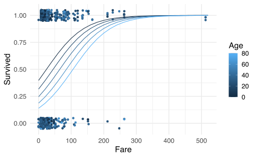

Capítulo 5 Regresión Logística
5.1 Preliminares
Asuma que la variable dependiente \(Y\) solo contiene valores 0 o 1 y queremos hacer la regresión:
\[\begin{equation*} Y = \beta_{0} +\beta_{1} X_{1} + \cdots + \beta_{p} X_{p} + \varepsilon. \end{equation*}\]
El problema es que \(\mathbb{E}\left[Y | \boldsymbol{X}\right] = \mathbb{P}\left(Y=1\vert \boldsymbol{X}\right)\) y se debe cumplir que
\[\begin{equation*} 0\leq \mathbb{E}\left[Y | \boldsymbol{X}\right]\leq 1. \end{equation*}\]
pero el rango de \(\beta_{0} +\beta_{1} X_{1} + \cdots + \beta_{p} X_{p}\) es todo \(\mathbb{R}\).
Solución: Cambiar \(Y\) por \(g(Y)\in [0,1]\), donde:
\[\begin{equation*} g(X) = \frac{1}{1+e^{-(\beta_{0} +\beta_{1} X_{1} + \cdots + \beta_{p} X_{p})}} \end{equation*}\]
titanic <- read.csv("data/titanic.csv")
summary(titanic)## PassengerId Survived Pclass Name
## Min. : 1.0 Min. :0.0000 Min. :1.000 Length:891
## 1st Qu.:223.5 1st Qu.:0.0000 1st Qu.:2.000 Class :character
## Median :446.0 Median :0.0000 Median :3.000 Mode :character
## Mean :446.0 Mean :0.3838 Mean :2.309
## 3rd Qu.:668.5 3rd Qu.:1.0000 3rd Qu.:3.000
## Max. :891.0 Max. :1.0000 Max. :3.000
##
## Sex Age SibSp Parch
## Length:891 Min. : 0.42 Min. :0.000 Min. :0.0000
## Class :character 1st Qu.:20.12 1st Qu.:0.000 1st Qu.:0.0000
## Mode :character Median :28.00 Median :0.000 Median :0.0000
## Mean :29.70 Mean :0.523 Mean :0.3816
## 3rd Qu.:38.00 3rd Qu.:1.000 3rd Qu.:0.0000
## Max. :80.00 Max. :8.000 Max. :6.0000
## NA's :177
## Ticket Fare Cabin Embarked
## Length:891 Min. : 0.00 Length:891 Length:891
## Class :character 1st Qu.: 7.91 Class :character Class :character
## Mode :character Median : 14.45 Mode :character Mode :character
## Mean : 32.20
## 3rd Qu.: 31.00
## Max. :512.33
## titanic <- titanic %>%
select(Survived, Fare, Age) %>%
drop_na()## Error in select(., Survived, Fare, Age): unused arguments (Survived, Fare, Age)fit_lm <- lm(Survived ~ Fare + Age, data = titanic)library(ggiraphExtra)
ggPredict(fit_lm) + theme_minimal(base_size = 16)
En lugar de esto, definamos el siguiente modelo
\[\begin{equation*} Y \sim Bernoulli (g_{\beta}(\boldsymbol{X})) \end{equation*}\]
con \(g_{\beta}(\boldsymbol{X}) = \mathbb{P}\left(Y=1 \vert \boldsymbol{X}\right)\).
En R usaremos la función glm
fit_glm <- glm(Survived ~ Fare + Age, data = titanic,
family = "binomial")
summary(fit_glm)##
## Call:
## glm(formula = Survived ~ Fare + Age, family = "binomial", data = titanic)
##
## Deviance Residuals:
## Min 1Q Median 3Q Max
## -2.7605 -0.9232 -0.8214 1.2362 1.7820
##
## Coefficients:
## Estimate Std. Error z value Pr(>|z|)
## (Intercept) -0.417055 0.185976 -2.243 0.02493 *
## Fare 0.017258 0.002617 6.596 0.0000000000423 ***
## Age -0.017578 0.005666 -3.103 0.00192 **
## ---
## Signif. codes: 0 '***' 0.001 '**' 0.01 '*' 0.05 '.' 0.1 ' ' 1
##
## (Dispersion parameter for binomial family taken to be 1)
##
## Null deviance: 964.52 on 713 degrees of freedom
## Residual deviance: 891.34 on 711 degrees of freedom
## (177 observations deleted due to missingness)
## AIC: 897.34
##
## Number of Fisher Scoring iterations: 5ggPredict(fit_glm) + theme_minimal(base_size = 16)
Nota: Existen otros tipos de regresión y estas se definen a través del parámetro family. En este curso solo nos enfocaremos en el parámetro family="binomial".
5.1.1 Oportunidad relativa (Odds Ratio)
Defina la oportunidad relativa:
\[\begin{equation*} O(X) = \frac{g(X)}{1-g(X)} = e^{\beta_{0} +\beta_{1} X_{1} + \cdots + \beta_{p} X_{p}}. \end{equation*}\]
como la razón de la probabilidad de obtener un 1 con respecto a la de obtener un 0.
Por ejemplo, suponga que \(\mathbb{P}\left(Y=1\vert \boldsymbol{X}\right) = g(\boldsymbol{X}) = 0.8\) es la probabilidad de pagar la tarjeta de crédito y \(1-g(\boldsymbol{X}) = 0.2\) es la probabilidad de no pagar.
Entonces la oportunidad relativa de pagar la tarjeta es \(O(X) = \frac{0.8}{0.2} = \frac{4}{1}\), lo que se interpreta como que es 4 veces más probable de pagar que no pagar.
5.2 Máxima verosimilitud
Los valores de \(\beta\) se pueden encontrar por máxima verosimilitud.
Defina \(p_{\beta}(\boldsymbol{X}) = \mathbb{P}\left(Y=1\vert \boldsymbol{X}\right)\).
La verosimilitud es (donde asumimos sin pérdida de generalidad que \(p(\boldsymbol{X}):=p_{\beta}(\boldsymbol{X})\)):
\[ L\left(\beta\right)=\prod_{i=1}^{n} p\left(\boldsymbol{X}_{i}\right)^{Y_{i}}\left(1-p\left(\boldsymbol{X}_{i}\right)\right)^{1-Y_{i}} \]
\[\begin{align*} \ell\left(\beta\right) &=\sum_{i=1}^{n} Y_{i} \log p\left(\boldsymbol{X}_{i}\right)+\left(1-Y_{i}\right) \log \left(1-p\left(\boldsymbol{X}_{i}\right)\right) \\ &=\sum_{i=1}^{n} \log \left(1-p\left(\boldsymbol{X}_{i}\right)\right)+\sum_{i=1}^{n} Y_{i} \log \frac{p\left(\boldsymbol{X}_{i}\right)}{1-p\left(\boldsymbol{X}_{i}\right)} \\ &=\sum_{i=1}^{n} \log \left(1-p\left(\boldsymbol{X}_{i}\right)\right)+\sum_{i=1}^{n} Y_{i}\left(\boldsymbol{X}_{i} \cdot \beta\right) \\ &=\sum_{i=1}^{n}-\log \left(1+e^{\boldsymbol{X}_{i} \cdot \beta}\right)+\sum_{i=1}^{n} Y_{i}\left(\boldsymbol{X}_{i} \cdot \beta\right) \end{align*}\]
\[\begin{align*} \frac{\partial \ell}{\partial \beta} &=-\sum_{i=1}^{n} \frac{1}{1+e^{\boldsymbol{X}_{i} \cdot \beta}} e^{\boldsymbol{X}_{i} \cdot \beta} \boldsymbol{X}_{i}+\sum_{i=1}^{n} Y_{i} \boldsymbol{X}_{i} \\ &=\sum_{i=1}^{n}\left(Y_{i}-p\left(\boldsymbol{X}_{i}\right)\right) \boldsymbol{X}_{i} \\ &= X^{\top}(Y-p(\boldsymbol{X})) \end{align*}\]
Solución: Algoritmo de Netwon-Raphson.
Ejercicio 5.1 Muestre que
\[\begin{equation*} \frac{\partial^{2} \ell}{\partial \beta^{2}} = -\boldsymbol{X}^{\top}W\boldsymbol{X} \end{equation*}\]
donde \(W_\beta = \mathrm{diag}\{p(\boldsymbol{X}_{i})(1-p(X_{i}))\}\).
El algoritmo de Netwon-Raphson usa el hecho que
\[\begin{equation*} \beta^{(t)} = \beta ^{(t-1)} - \left( \frac{\partial^{2} \ell}{\partial \beta^{2}}\right)^{-1} \frac{\partial \ell}{\partial \beta} \Bigg\vert_{\beta ^{(t-1)}} \end{equation*}\]
Ejercicio 5.2 Muestre que
\[\begin{equation*} \beta^{(t)} = \left( X^{\top}W_\beta X \right)^{-1}X^{\top}Z_{\beta}, \end{equation*}\]
donde \(Z_{\beta} = Z\beta + W^{-1}_{\beta} (Y-p(X))\) y \(\beta=\beta^{(t-1)}\).
A esta técnica se le conoce como mínimos cuadrados ponderados e iterados o en inglés Iteratively Re-Weighted Least Squares (IRLS).
5.2.1 Resultados adicionales
La suma al cuadrado de los residuos estandarizados se convierte en el estadístico de pearson:
\[\begin{align*} \chi^{2}=\sum_{i=1}^{n} \frac{\left(Y_{i}-\hat{p}(X_{i})\right)^{2}}{\hat{p}(X_{i})} \end{align*}\]
la cual es una aproximación cuadrática de la devianza (Curso pasado).
\[\begin{equation*} D = -2 \ell(\hat{\beta}) \end{equation*}\]
Además tenemos los resultados que
- \(\hat{\beta} \xrightarrow{\mathbb{P}} \beta\)
- \(\hat{\beta} \xrightarrow{\mathcal{D}} \mathcal{N}\left(\beta,(X^{\top}WX)^{-1}\right)\) (Prueba de Wald)
- Se pueden comparar un modelo completo con un reducido a través de pruebas asintóticas LRT: \[\begin{equation*} D_c -D_r \stackrel{H_0}{\sim} =\chi^{2}_{df_{c}-df_r}. \end{equation*}\]
5.3 Diágnosticos del modelo
Advertencia: La función glm no tiene un equivalente de plot como en los modelos lineales. De esta forma, si se aplica plot a un objeto glm solo generará los mismos chequeos que el capítulo anterior. Sin embargo estos podrían estar equivocados si no se leen con cuidado.
5.3.1 Supuesto de linealidad
Este supuesto debe ser chequeado con la función logit de las respuestas.
fit_glm <- glm(Survived ~ Fare + Age, data = titanic,
family = "binomial")
summary(fit_glm)##
## Call:
## glm(formula = Survived ~ Fare + Age, family = "binomial", data = titanic)
##
## Deviance Residuals:
## Min 1Q Median 3Q Max
## -2.7605 -0.9232 -0.8214 1.2362 1.7820
##
## Coefficients:
## Estimate Std. Error z value Pr(>|z|)
## (Intercept) -0.417055 0.185976 -2.243 0.02493 *
## Fare 0.017258 0.002617 6.596 0.0000000000423 ***
## Age -0.017578 0.005666 -3.103 0.00192 **
## ---
## Signif. codes: 0 '***' 0.001 '**' 0.01 '*' 0.05 '.' 0.1 ' ' 1
##
## (Dispersion parameter for binomial family taken to be 1)
##
## Null deviance: 964.52 on 713 degrees of freedom
## Residual deviance: 891.34 on 711 degrees of freedom
## (177 observations deleted due to missingness)
## AIC: 897.34
##
## Number of Fisher Scoring iterations: 5probs <- predict(fit_glm, type = "response")
df <- titanic %>%
select(Fare, Age) %>%
mutate(logit = qlogis(probs)) %>%
pivot_longer(names_to = "predictores", values_to = "valores.predictores",
-logit)## Error in select(., Fare, Age): unused arguments (Fare, Age)ggplot(df, aes(valores.predictores, logit)) + geom_point(size = 0.5,
alpha = 0.5) + geom_smooth(method = "loess") +
theme_bw() + facet_wrap(~predictores, scales = "free")## Error in `ggplot()`:
## ! You're passing a function as global data.
## Have you misspelled the `data` argument in `ggplot()`5.3.2 Valores de gran influencia
library(broom)
fit_data <- broom::augment(fit_glm) %>%
mutate(indice = 1:n())
fit_data %>%
top_n(3, .cooksd)## # A tibble: 3 x 11
## .rownames Survived Fare Age .fitted .resid .std.resid .hat .sigma
## <chr> <int> <dbl> <dbl> <dbl> <dbl> <dbl> <dbl> <dbl>
## 1 28 0 263 19 3.79 -2.76 -2.77 0.00862 1.12
## 2 119 0 248. 24 3.43 -2.63 -2.65 0.0103 1.12
## 3 439 0 263 64 3.00 -2.47 -2.49 0.0171 1.12
## # ... with 2 more variables: .cooksd <dbl>, indice <int>ggplot(fit_data, aes(indice, .std.resid)) + geom_point(aes(color = as.factor(Survived)),
alpha = 0.5) + theme_bw()fit_data %>%
filter(abs(.std.resid) > 3)## # A tibble: 0 x 11
## # ... with 11 variables: .rownames <chr>, Survived <int>, Fare <dbl>,
## # Age <dbl>, .fitted <dbl>, .resid <dbl>, .std.resid <dbl>, .hat <dbl>,
## # .sigma <dbl>, .cooksd <dbl>, indice <int>5.4 Predicción y poder de clasificación
La capacidad predictiva de un modelo de clasificación como el de regresión logística se debe medir conforme a la naturaleza de la variable dependiente. Primero recordemos que el modelo predictivo en este caso estaría definido por:
\[\begin{equation*} \hat{p}(X)=\frac{1}{1+e^{-(\hat{\beta}_{0}+\hat{\beta}_{1} X_{1}+\cdots+\hat{\beta}_{p} X_{p})}} \end{equation*}\]
donde los \(\beta\)’s son estimados usando IRLS.
Ahora imaginemos que tenemos un conjunto de datos nuevo \((X^{*}_{1},\ldots,X^{*}_{p})\) y queremos ver que tipo de respuesta \(Y^{*}\) obtenemos (0 o 1) para este conjunto de datos.
Obviamente nuestro modelo puede equivocarse y darnos una respuesta errónea. Por ejemplo digamos que en el caso del titanic uno esperaría que personas más jóvenes y que hayan pagado más por su tiquete tengan mayor probabilidad de sobrevivencia.
Entonces tenemos realmente 4 opciones
| Modelo = 0 | Modelo = 1 | ||
|---|---|---|---|
| Real = 0 | Verdaderos Negativos. (TN) | Falsos Positivos (FP) | \(N\) |
| Real = 1 | Falsos Negativos (FN) | Verdaderos Positivos (TP) | \(P\) |
| Total | \(N^{\star}\) | \(P^{\star}\) |
predict_numeric <- predict(fit_glm, type = "response")
predict_01 <- as.numeric(predict_numeric >= 0.5)
matriz_confusion <- table(titanic$Survived, predict_01)## Error in table(titanic$Survived, predict_01): all arguments must have the same lengthcolnames(matriz_confusion) <- c("N", "P")## Error in colnames(matriz_confusion) <- c("N", "P"): object 'matriz_confusion' not foundrownames(matriz_confusion) <- c("N", "P")## Error in rownames(matriz_confusion) <- c("N", "P"): object 'matriz_confusion' not foundmatriz_confusion## Error in eval(expr, envir, enclos): object 'matriz_confusion' not foundNoten que se utilizó un umbral de .5 como separador de que un evento genera un 1 o un 0 a nivel de predicción. Para entender la siguiente tabla vamos a definir los siguientes términos:
- Exactitud (Accuracy)
- Es la tasa de que un individuo esté bien identificado por el modelo de clasificación \((TP+TN)/(TP+TN+FN+FP)\).
- Precisión
- Es la tasa de elementos identificados como 1 de forma correcta con respecto a los que fueron identificados con un valor de 1 \(Precisión = TP/P^\star\)
- Sensibilidad (Exhaustividad)
- Es la tasa de elementos identificados como 1 de forma correcta con respecto a los que realmente son 1. \(Sensibilidad = TP/P\)
- F-Score
- Es la media armónica entre la precisión y la sensibilidad. \(F-Score = 2\times(Sensibilidad * Precisión)/(Sensibilidad + Precisión)\)
- Especificidad
- Es la tasa de elementos identificados correctamente como 0 que realmente estaban etiquetados como 0.
Entonces esto nos da las siguientes posibilidades.
| Tipo | Cálculo | Sinónimos |
|---|---|---|
| Sensibilidad | \(TP/P\) | 1 - Error tipo II, Poder, Exhaustividad, Exhaustividad. |
| Especificidad | \(TN/N\) | 1- Error tipo I. |
| Valor de Predicción Positivos | \(TP/P^{\star}\) | Positive predicted values (PPV), Precisión. |
| Valor de Predicción Negativos | \(TN/N^{\star}\) | Negative predicted values (NPV) |
| F-Score | \(\frac{2(TP/P^{\star} \times TP/P )}{(TP/P^{\star} + TP/P )}\) |
Nota:
- La sensibilidad y especificidad son buenos indicadores cuando los datos son simétricos (igual número de FP y FN).
- El F-Score ayuda cuando los datos son asimétricos. El valor mayor de este valor es 1 indicado una precisión y exhaustividad perfectas.
- La sensibilidad nos permite describir la capacidad de categorizar los verdaderos positivos de forma correcta.
- En cambio, la especificidad lo hace para los verdaderos negativos.
- La precisión o PPV nos permite describir la capacidad del modelo de predecir verdaderos positivos.
- El NPV predice la capacidad del modelo de predecir los verdaderos negativos.
En un modelo se debe entender que significa cada uno de estos valores para entender los resultados.
- Sensibilidad es importante si la ocurrencia de falsos negativos es inaceptable. Supongamos que alguien tiene VIH y el examen le da negativo. En este caso es inaceptable el resultado, por lo que la prueba debe tener un alto valor de sensibilidad.
- Especificidad es importante para si la ocurrencia de falsos positivos es inaceptable. Es decir, supongamos que una persona tiene un tumor benigno y un examen lo clasifica como maligno. La persona sana, se declara enferma y debe pasar por un proceso de quimioterapia. La alta especificidad baja la probabildiad que esto ocurra.
- PPV es importante si se quiere estar más seguro de los verdaderos positivos. Por ejemplo detectar spam en correos electrónicos.
- NPV es impotante si se desea predecir correctamente los verdaderos negativos. Por ejemplo, se está tratando una población con una droga experimental y se quiere saber cuál será la proporción de personas que se curaran de la enfermedad.
(TN <- matriz_confusion["N", "N"])## Error in eval(expr, envir, enclos): object 'matriz_confusion' not found(TP <- matriz_confusion["P", "P"])## Error in eval(expr, envir, enclos): object 'matriz_confusion' not found(FP <- matriz_confusion["N", "P"])## Error in eval(expr, envir, enclos): object 'matriz_confusion' not found(FN <- matriz_confusion["P", "N"])## Error in eval(expr, envir, enclos): object 'matriz_confusion' not found(exactitud <- (TP + TN)/(TP + TN + FP + FN))## Error in eval(expr, envir, enclos): object 'TP' not found(precision <- TP/(TP + FP))## Error in eval(expr, envir, enclos): object 'TP' not found(sensibilidad <- TP/(TP + FN))## Error in eval(expr, envir, enclos): object 'TP' not found(F_score <- 2 * (precision * sensibilidad)/(precision +
sensibilidad))## Error in eval(expr, envir, enclos): object 'sensibilidad' not found(especificidad <- TN/(TN + FP))## Error in eval(expr, envir, enclos): object 'TN' not found5.4.1 Curva ROC
Un excelente clasificador debería detectar correctamente los verdaderos positivos (TP) e ignorar los falsos positivos (FP). Puesto de otra forma, si el clasificador es malo, los verdaderos positivos serían indistingibles de los falsos positivos.
La curva ROC (Receiver Operation Curve) grafica la Tasa Falsos Positivos vs Sensibilidad del modelo. Y el estadístico AUC mide el área bajo la curva ROC.
library(ROCR)
logist.pred.ROCR <- prediction(predict_numeric, titanic$Survived)## Error in prediction(predict_numeric, titanic$Survived): Number of predictions in each run must be equal to the number of labels for each run.logist.perf <- performance(logist.pred.ROCR, "tpr",
"fpr")## Error in performance(logist.pred.ROCR, "tpr", "fpr"): object 'logist.pred.ROCR' not foundplot(logist.perf)## Error in h(simpleError(msg, call)): error in evaluating the argument 'x' in selecting a method for function 'plot': object 'logist.perf' not foundabline(0, 1, col = "red")## Error in int_abline(a = a, b = b, h = h, v = v, untf = untf, ...): plot.new has not been called yetauc <- performance(logist.pred.ROCR, measure = "auc")## Error in performance(logist.pred.ROCR, measure = "auc"): object 'logist.pred.ROCR' not foundauc@y.values## Error in eval(expr, envir, enclos): object 'auc' not foundNota:
Hasta este momento estamos verificando el poder de clasificación del modelo con los mismos datos que usamos para ajustarlo. Es decir, le estamos diciendo al modelo que compruebe la veracidad de la clasificación que ya se hizo previamente.
Esto es incorrecto, ya que el modelo ya sabe “las respuestas” y no estamos midiendo su poder de clasificación sino más bien su capacidad predictiva dentro del conjunto de entrenamiento.
Para resolver esto, debemos tomar otra muestra de prueba (training) que nos diga si el ajuste que hicimos es correcto.
titanic$id <- 1:nrow(titanic)
train <- titanic %>%
sample_frac(0.75)
test <- titanic %>%
anti_join(train, by = "id")fit_glm <- glm(Survived ~ Fare + Age, data = train,
family = "binomial")predict_numeric <- predict(fit_glm, newdata = test,
type = "response")
predict_01 <- as.numeric(predict_numeric >= 0.5)
matriz_confusion <- table(test$Survived, predict_01)
colnames(matriz_confusion) <- c("N", "P")
rownames(matriz_confusion) <- c("N", "P")
matriz_confusion## predict_01
## N P
## N 83 8
## P 60 21(TN <- matriz_confusion["N", "N"])## [1] 83(TP <- matriz_confusion["P", "P"])## [1] 21(FP <- matriz_confusion["N", "P"])## [1] 8(FN <- matriz_confusion["P", "N"])## [1] 60(exactitud <- (TP + TN)/(TP + TN + FP + FN))## [1] 0.6046512(precision <- TP/(TP + FP))## [1] 0.7241379(sensibilidad <- TP/(TP + FN))## [1] 0.2592593(F_score <- 2 * (precision * sensibilidad)/(precision +
sensibilidad))## [1] 0.3818182(especificidad <- TN/(TN + FP))## [1] 0.9120879Por defecto, la probabilidad para crear la matrix de confusión es 0.5. Si empezamos a variar esa probabilidad en el rango de 0 a 1, obtenemos la curva ROC.
logist.pred.ROCR <- prediction(predict_numeric, test$Survived)## Error: 'predictions' contains NA.logist.perf <- performance(logist.pred.ROCR, "tpr",
"fpr")## Error in performance(logist.pred.ROCR, "tpr", "fpr"): object 'logist.pred.ROCR' not foundplot(logist.perf)## Error in h(simpleError(msg, call)): error in evaluating the argument 'x' in selecting a method for function 'plot': object 'logist.perf' not foundabline(0, 1, col = "red")## Error in int_abline(a = a, b = b, h = h, v = v, untf = untf, ...): plot.new has not been called yetauc <- performance(logist.pred.ROCR, measure = "auc")## Error in performance(logist.pred.ROCR, measure = "auc"): object 'logist.pred.ROCR' not foundauc@y.values## Error in eval(expr, envir, enclos): object 'auc' not found